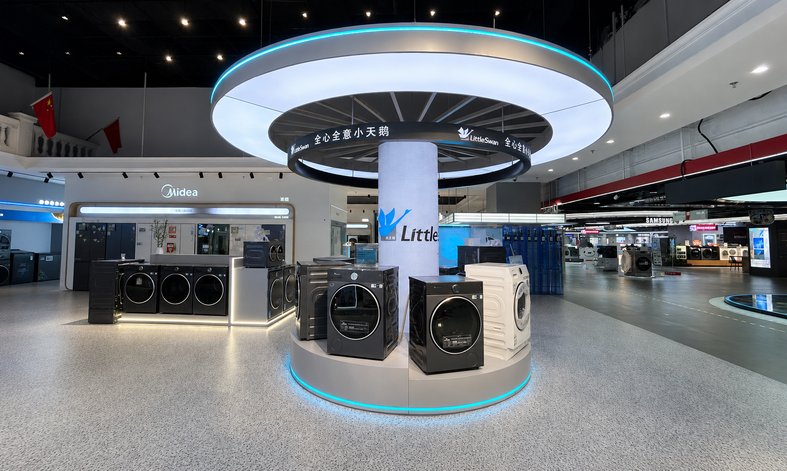
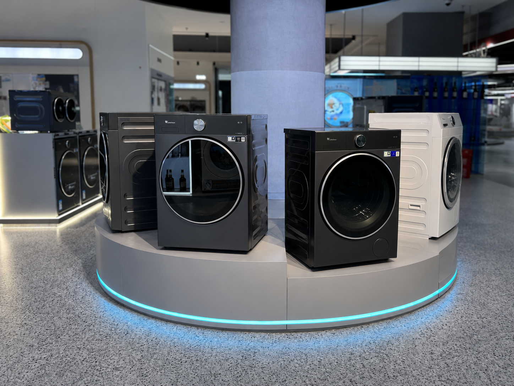
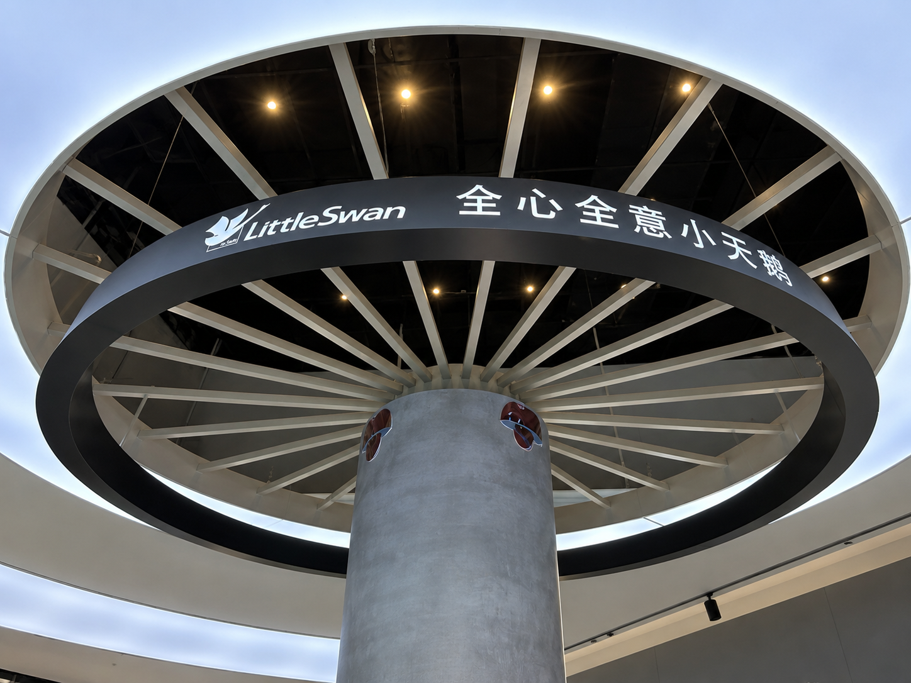
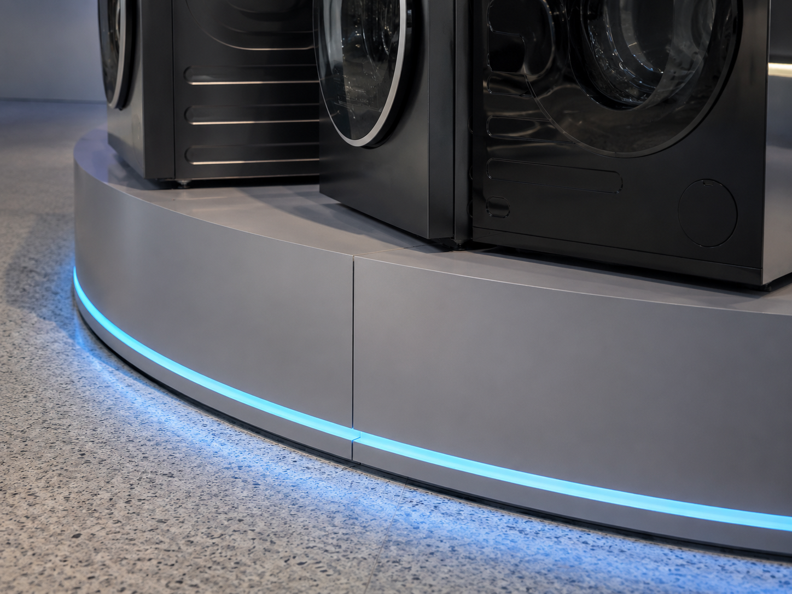

Little Swan Washer Display Platform
A circular appliance platform becomes a retail landmark when floor-level product access and overhead brand architecture work as one system.
The Little Swan Washer Display Platform is a custom freestanding display designed and manufactured by REYI. Four washer positions surround a central branded column, while a dual-layer illuminated canopy and radial structure create strong visibility across the open retail floor. Blue perimeter lighting traces the circular base and connects the product display with the overhead identity.

One circular structure connects product access, brand visibility and store navigation
The complete product includes the circular floor platform, four appliance presentation positions, central column and suspended dual-ring canopy. Shoppers can approach the products from multiple directions, while the elevated Little Swan identity remains visible beyond the immediate display zone. The radial overhead structure visually links the canopy back to the center, creating a coherent landmark rather than a group of separate appliances.

Four coordinated decisions make the platform visible, approachable and structurally clear
360° Product Access
Appliances are arranged around the circular base so customers can enter from several aisles and compare models without a fixed front or back.
Overhead Brand Landmark
The illuminated upper canopy and lower brand ring carry the Little Swan identity above surrounding fixtures and improve long-distance visibility.
Radial Structural Logic
Spoke-like members connect the central column and circular frame, turning the canopy structure into a deliberate visual feature.
Layered Lighting Hierarchy
White canopy illumination, brand graphics and blue base lighting separate overhead identity, product zone and platform edge.
The platform becomes clear through three controlled details

The curved platform keeps four appliances within one compact footprint while preserving individual product visibility and a clear customer approach around the perimeter.

The illuminated brand ring, slogan and radial members make the overhead structure readable at close range and reinforce the connection between identity and construction.

The continuous blue light line follows the circular base, clarifying the platform boundary while revealing controlled panel joints and the clean support detail beneath the appliances.
Planning a circular laundry-appliance display landmark?
Share the store plan, appliance schedule and communication brief with us. REYI can coordinate the platform diameter, product positions, central column, overhead ring structure, illuminated brand graphics, radial framing, edge lighting, power routing, service access and installation-ready construction. Programs can be ordered through a brand headquarters and delivered for use in markets worldwide.
- Store plan
- Appliance schedule
- Platform diameter
- Brand brief
- Power & lighting needs
- Delivery timeline